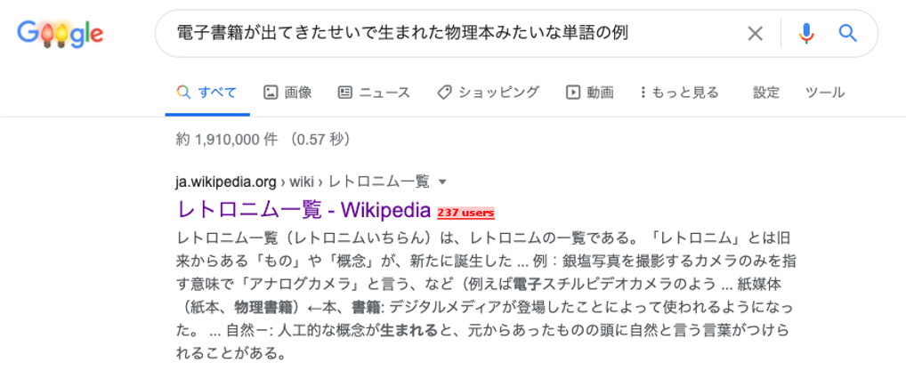
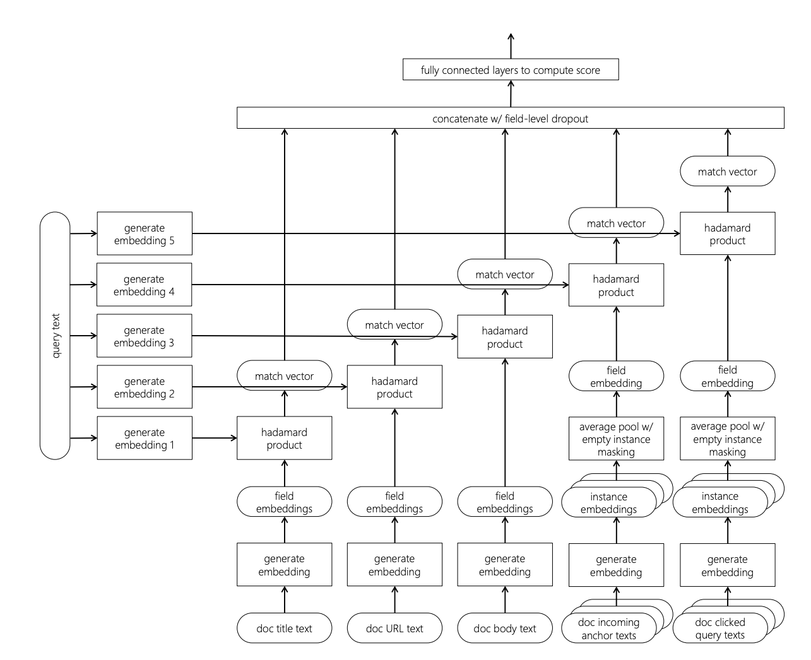

<!DOCTYPE html>
<html lang="ja" prefix="og: http://ogp.me/ns# fb: https://www.facebook.com/2008/fbml">
<head>
    <title>情報検索：検索エンジンの実装と評価 第 8 章 確率的情報検索 - 霧でも食ってろ</title>
    <!-- Using the latest rendering mode for IE -->
    <meta http-equiv="X-UA-Compatible" content="IE=edge">
    <meta charset="utf-8">
    <meta name="viewport" content="width=device-width, initial-scale=1.0">


<link rel="canonical" href="./buttcher-book-8.html">

        <meta name="author" content="knuu" />
        <meta name="keywords" content="情報検索" />
        <meta name="description" content="この記事は 「情報検索：検索エンジンの実装と評価」（Buttcher本） Advent Calendar 2020 の 25 日目の記事です． この記事では第 8 章を最初から解説する...予定だったのですが，8.1 から 8.5 までの話，つまり確率的ランキング原理から BM25 の導出までについては，既に素晴らしい日本語解説が存在するため，この部分に関してはそちらを御覧ください12．また，導出などはどうでもいい，とにかく BM25 の式の意味を知りたい，という人は解説動画34を見るとよいと思います．TF-IDF から BM25 までを非常に平易に説明してくれています． この記事では，8.6 と 8.7 について解説をしていきます． 8.6 Relevance …" />

        <meta property="og:site_name" content="霧でも食ってろ" />
        <meta property="og:type" content="article"/>
        <meta property="og:title" content="情報検索：検索エンジンの実装と評価 第 8 章 確率的情報検索"/>
        <meta property="og:url" content="./buttcher-book-8.html"/>
        <meta property="og:description" content="この記事は 「情報検索：検索エンジンの実装と評価」（Buttcher本） Advent Calendar 2020 の 25 日目の記事です． この記事では第 8 章を最初から解説する...予定だったのですが，8.1 から 8.5 までの話，つまり確率的ランキング原理から BM25 の導出までについては，既に素晴らしい日本語解説が存在するため，この部分に関してはそちらを御覧ください12．また，導出などはどうでもいい，とにかく BM25 の式の意味を知りたい，という人は解説動画34を見るとよいと思います．TF-IDF から BM25 までを非常に平易に説明してくれています． この記事では，8.6 と 8.7 について解説をしていきます． 8.6 Relevance …"/>
        <meta property="article:published_time" content="2020-12-26" />
            <meta property="article:section" content="blog" />
            <meta property="article:tag" content="情報検索" />
            <meta property="article:author" content="knuu" />


    <!-- Bootstrap -->
        <link rel="stylesheet" href="./theme/css/bootstrap.min.css" type="text/css"/>
    <link href="./theme/css/font-awesome.min.css" rel="stylesheet">

    <link href="./theme/css/pygments/emacs.css" rel="stylesheet">
    <link rel="stylesheet" href="./theme/css/style.css" type="text/css"/>

        <link href="./feeds/all.atom.xml" type="application/atom+xml" rel="alternate"
              title="霧でも食ってろ ATOM Feed"/>

        <link href="./feeds/all.rss.xml" type="application/rss+xml" rel="alternate"
              title="霧でも食ってろ RSS Feed"/>


</head>
<body>

<div class="navbar navbar-inverse navbar-fixed-top" role="navigation">
	<div class="container">
        <div class="navbar-header">
            <button type="button" class="navbar-toggle" data-toggle="collapse" data-target=".navbar-ex1-collapse">
                <span class="sr-only">Toggle navigation</span>
                <span class="icon-bar"></span>
                <span class="icon-bar"></span>
                <span class="icon-bar"></span>
            </button>
            <a href="./" class="navbar-brand">
霧でも食ってろ            </a>
        </div>
        <div class="collapse navbar-collapse navbar-ex1-collapse">
            <ul class="nav navbar-nav">
                         <li><a href="./pages/about-me.html">
                             About Me
                          </a></li>
                         <li><a href="./pages/ml-dm-ai_jp_papers.html">
                             ML-DM-AI Papers by Researchers in Japan
                          </a></li>
            </ul>
            <ul class="nav navbar-nav navbar-right">
            </ul>
        </div>
        <!-- /.navbar-collapse -->
    </div>
</div> <!-- /.navbar -->
<!-- Banner -->
<!-- End Banner -->
<div class="container">
    <div class="row">
        <div class="col-sm-9">
    <section id="content">
        <article>
            <header class="page-header">
                <h1>
                    <a href="./buttcher-book-8.html"
                       rel="bookmark"
                       title="Permalink to 情報検索：検索エンジンの実装と評価 第 8 章 確率的情報検索">
                        情報検索：検索エンジンの実装と評価 第 8 章 確率的情報検索
                    </a>
                </h1>
            </header>
            <div class="entry-content">
                <div class="panel">
                    <div class="panel-body">
<footer class="post-info">
    <span class="label label-default">Date</span>
    <span class="published">
        <i class="fa fa-calendar"></i><time datetime="2020-12-26T00:00:00+09:00"> 2020-12-26(土)</time>
    </span>


<span class="label label-default">Tags</span>
	<a href="./tag/information_retrieval.html">情報検索</a>
    
</footer><!-- /.post-info -->                    </div>
                </div>
                <p>この記事は <a href="https://adventar.org/calendars/4968">「情報検索：検索エンジンの実装と評価」（Buttcher本） Advent Calendar 2020</a> の 25 日目の記事です．</p>
<p>この記事では第 8 章を最初から解説する...予定だったのですが，8.1 から 8.5 までの話，つまり確率的ランキング原理から BM25 の導出までについては，既に素晴らしい日本語解説が存在するため，この部分に関してはそちらを御覧ください<sup id="fnref:prob_ir"><a class="footnote-ref" href="#fn:prob_ir">1</a></sup><sup id="fnref:prob_ir2"><a class="footnote-ref" href="#fn:prob_ir2">2</a></sup>．また，導出などはどうでもいい，とにかく BM25 の式の意味を知りたい，という人は解説動画<sup id="fnref:alice1"><a class="footnote-ref" href="#fn:alice1">3</a></sup><sup id="fnref:alice2"><a class="footnote-ref" href="#fn:alice2">4</a></sup>を見るとよいと思います．TF-IDF から BM25 までを非常に平易に説明してくれています．</p>
<p>この記事では，8.6 と 8.7 について解説をしていきます．</p>
<h2 id="86-relevance-feedback">8.6 Relevance Feedback（適合性フィードバック）</h2>
<p>これまで BM25 について説明してきましたが，その途中にもいくつかのスコア関数が出てきました．バイナリ独立モデルもその一つであり，スコア関数は以下の式で表されます．</p>
<div class="math">$$
\sum_{t \in q \cap d} w_t = \sum_{t \in q \cap d} \log \frac{p_t(1-\bar{p_t})}{\bar{p_t}(1-p_t)}
$$</div>
<p>ただし，各記号は以下の通りです．</p>
<ul>
<li><span class="math">\(q,d\)</span>: それぞれクエリと文書に含まれる語の集合</li>
<li><span class="math">\(p_t=p(D_t=1|r), \bar{p_t}=p(D_t=1|\bar{r})\)</span>: 文書において語 <span class="math">\(t\)</span> が出現する確率<ul>
<li><span class="math">\(D_t\)</span>: 語 <span class="math">\(t\)</span> が出現するかどうかを表す確率変数</li>
<li><span class="math">\(r, \bar{r}\)</span>: それぞれ適合，不適合を表す</li>
</ul>
</li>
</ul>
<p>なぜこのスコア関数を直接ランキングに用いずに，BM25 を導出しようとしていたのでしょうか？この理由として考えられるのは，<span class="math">\(p_t, \bar{p_t}\)</span> などを推定するためには，それぞれのクエリに対して適合文書/不適合文書が必要であるためだと推測できます．つまり，任意のクエリに対してアノテーション（適合性判定）を行う必要があり，現実的ではありません．しかしこれらを正しく推定することができれば，よりよい検索結果を返すことが可能になるかもしれません．</p>
<p>また，確率的ランキング原理からバイナリ独立モデルを導出する過程では，仮定 Q の存在がありました．この仮定により，クエリに出現しない単語は適合性に影響しないものとして無視されてしまっていました．しかしクエリに出現しなくても適合性に影響を与える語が存在することは容易に想像できます．例えばクエリに含まれる語の同義語は適合性に影響を与えそうです．また別の例としては，ユーザの持つ情報要求をユーザ自身が適切にキーワードクエリとして落とし込めていない場合なども，ユーザの情報要求とは合致するがクエリには存在しないが語が，適合かどうかに影響を与えそうです．</p>
<div align="center">
<figure id="retronyms">

<figcaption>「レトロニム」という単語を調べたいという情報要求を持っているが名前が思い出せない．このような場合でも「レトロニム」というクエリには存在しないが情報要求に合致する単語を含むページが上位に来てほしい．</figcaption>
</figure>
</div>
<p>適合性フィードバックは上記で述べた 2 つの問題（推定には適合性判定が必要であるという問題，クエリに存在しないが適合性に影響を与える語が存在するという問題）に対処するための手法です．適合性フィードバックは以下の流れで処理を行います，</p>
<ol>
<li>ユーザは検索エンジンにクエリを入力する．</li>
<li>検索エンジンはなんらかのスコア関数でランキングを提示する．</li>
<li>ユーザは検索結果に対して，適合性判定を行う．つまりランキング上位の文書に対して，適合/不適合を判定する．</li>
<li>検索エンジンは与えらた適合性判定結果をもとに，適合文書からいくつかの単語をクエリに追加して再度検索を行う．</li>
</ol>
<p>もとのクエリに対して，いくつかの単語を追加することで検索結果を改善することは<strong>クエリ拡張</strong>と呼ばれています．</p>
<p>しかしながら，適合性フィードバックはユーザが検索結果に対して適合性判定を行う必要があり，ユーザの負担となるという問題があります．そこで，最初の検索結果において上位にランク付けされる文書はある程度適合しているはずだという仮定をおき，上位の文書は必ず適合文書であるとみなして適合性フィードバックを行う手法が研究されています．この手法は<strong>疑似適合性フィードバック</strong>と呼ばれています．疑似適合性フィードバックは，教科書の例や実験結果のように性能を向上させる可能性もある一方で，上位の文書には適合文書が多く含まれているという仮定が成立しない場合には性能が落ちてしまう可能性も十分にありうるため注意が必要です．</p>
<h2 id="87-field-weights-bm25f-bm25f">8.7 Field Weights: BM25F（フィールドの重みを考慮した検索: BM25F）</h2>
<p>情報検索において，検索対象のアイテム（文書）が複数のフィールドを持つことは多いです．例えば Web ページはタイトルと中身の文書（本文）などのフィールドを持ちます．また，Web 検索においては，他の文書からのアンカーテキストが検索において有効であると言われており．これも 1 つのフィールドとみなすことができます．このような検索は <strong>Multi-field Retrieval</strong>（複数フィールド検索，マルチフィールド検索）と呼ばれており，以下のような検索が例としてあげられます．</p>
<ul>
<li>Web 検索: タイトル，中身の文書（本文），URL，アンカーテキスト，クリックされたクエリ <sup id="fnref2:NRM-F"><a class="footnote-ref" href="#fn:NRM-F">5</a></sup></li>
<li>商品検索: タイトル，説明，カテゴリ，メタデータ，ブランド，大きさなどの数値，過去の検索クエリ <sup id="fnref:SMM"><a class="footnote-ref" href="#fn:SMM">7</a></sup></li>
<li>レシピ検索: タイトル，説明文，材料，レシピが公開された国 <sup id="fnref:FM"><a class="footnote-ref" href="#fn:FM">8</a></sup></li>
<li>表検索<ul>
<li>Web 上の表の場合: ページタイトル，セクションタイトル，表のキャプション，表の列名，表の中身 <sup id="fnref:STR"><a class="footnote-ref" href="#fn:STR">6</a></sup></li>
</ul>
</li>
<li>学術論文: タイトル，概要， 著者，セクション，図表，Venue，年，キーワード，引用先論文，被引用論文</li>
</ul>
<p>ここではフィールドはすべてテキストであり，またクエリはキーワードクエリであると仮定して話を進めていきます（このような検索タスクはアドホック（文書）検索と呼ばれており，情報検索において最も基本的な検索タスクです）．</p>
<p>複数フィールド検索において特徴的なこととして，検索対象のアイテムが持つフィールドはそれぞれ性質が異なるという点があげられます．</p>
<ul>
<li>文章の長さ: タイトルは短い一方で中身は長いことが多いなど，フィールドに含まれる文章の長さが異なる可能性がある</li>
<li>単語の出現頻度: タイトルには抽象的な単語が用いられる一方で，本文では具体的な単語が用いられるなど，同じ単語でもフィールドごとに出現頻度が異なる可能性がある</li>
</ul>
<p>ここまで考えてきた BM25 は文章の長さや単語の出現頻度の情報をスコア計算に使う手法であるため，フィールドごとに大きくスコアが変化するはずであることが推測されます．では BM25 においてフィールドごとに異なる情報をどのように組み合わせればよいでしょうか？</p>
<p>BM25F<sup id="fnref:BM25F"><a class="footnote-ref" href="#fn:BM25F">9</a></sup><sup id="fnref:BM25_2"><a class="footnote-ref" href="#fn:BM25_2">10</a></sup> はフィールドごとの（擬似的な）単語頻度の重み付き和を用いてフィールドごとの情報を統合する検索手法です．BM25 におけるクエリ <span class="math">\(t\)</span> のスコアは以下の式で表されます．</p>
<div class="math">$$
\frac{f_{t,d} (k_1 + 1)}{k_1 \left((1-b)+b\frac{l_d}{l_{\mathrm{avg}}}\right) + f_{t,d}} w_t = \frac{f_{t,d}' (k_1 + 1)}{k_1 + f_{t,d}'} w_t
$$</div>
<p>ただし，<span class="math">\(f_{t,d}'=\frac{f_{t,d}}{(1-b)+b\frac{l_d}{l_{\mathrm{avg}}}}\)</span> であり，<span class="math">\(w_t\)</span> は任意のロバートソン/スパルク・ジョーンズ重み付け（実用上は IDF が用いられることが多い）です．BM25F はこの <span class="math">\(f_{t,d}'\)</span> をフィールドごとに計算し，その重み付き和を文書全体に対する単語頻度として BM25 のスコアを計算します．式で書くと以下のようになります．</p>
<div class="math">$$
f_{t,d}'=\sum_{s \in S} v_s \frac{f_{t,d,s}}{(1-b_s)+b_s\frac{l_{d,s}}{l_{\mathrm{s, avg}}}}
$$</div>
<p>ただし，この式に出現する記号は以下の通りです．</p>
<ul>
<li><span class="math">\(S\)</span>: 文書 <span class="math">\(d\)</span> が持つフィールドの集合</li>
<li><span class="math">\(f_{t,d,s}\)</span>: 文書 <span class="math">\(d\)</span> のフィールド <span class="math">\(s\)</span> における単語 <span class="math">\(t\)</span> の出現頻度</li>
<li><span class="math">\(l_{d,s}\)</span>: 文書 <span class="math">\(d\)</span> におけるフィールド <span class="math">\(s\)</span> の長さ（単語数）</li>
<li><span class="math">\(l_{s,\mathrm{avg}}\)</span>: 文書集合におけるフィールド <span class="math">\(s\)</span> の長さの平均値</li>
<li><span class="math">\(v_s, b_s\)</span>: フィールドごとに決めなければならないハイパーパラメータ</li>
</ul>
<p>これにより，フィールドごとの単語頻度や文書長を考慮した検索が行えるようになりました．一方で BM25F は決めるべきパラメータ数が多くなってしまっています．BM25 では <span class="math">\(2\)</span> 個だったパラメータ数が BM25F では <span class="math">\(2|S|+1\)</span> 個になっています（<span class="math">\(|S|\)</span> はフィールド数）．そこで，よりシンプルな BM25F として BM25 の <span class="math">\(f_{t,d}, l_d\)</span> のかわりに以下の <span class="math">\(f_{t,d}', l_d'\)</span> を用いる手法も提案されています．</p>
<div class="math">$$
f_{t,d}'=\sum_{s \in S} v_s f_{t,d,s}, \ \ \ l_d'=\sum_{s \in S} v_s l_{d,s}
$$</div>
<p>フィールドごとに決めるべきパラメータは <span class="math">\(v_s\)</span> のみとなっており，パラメータの個数は <span class="math">\(|S|+2\)</span> 個に減りました．</p>
<h3 id="_1">複数フィールド検索に関するその他の話題</h3>
<p>まずパラメータチューニングについてです．BM25 や BM25F はハイパーパラメータを持っていますが，これらはどのように決めればよいでしょうか？これはなんらかアノテーションされたデータを用意し，NDCG などの評価指標を用いてパラメータを選択すればよいです．パラメータ探索アルゴリズムとしては，グリッドサーチの他に，座標降下法が用いられていることが多い印象です（あまり詳しくないので間違っている場合はこっそり教えて下さい...）．</p>
<p>最後に手法的な発展の話です．近年はアノテーションされたデータが多く手に入るようになったことによって，機械学習的な手法（ランキング学習）が多く研究されている印象です．近年では深層学習を用いた検索アルゴリズムも研究されており，NRM-F<sup id="fnref:NRM-F"><a class="footnote-ref" href="#fn:NRM-F">5</a></sup> もその 1 つです．NRM-F のアーキテクチャは以下の図の通りです（図は Mitra &amp; Craswell<sup id="fnref:intro"><a class="footnote-ref" href="#fn:intro">11</a></sup> の図 7.1 より）．まず，フィールドごとに embedding をしてクエリの embedding とアダマール積をとった後，それらを結合し最終的なスコアを多層パーセプトロンで計算しています．NRM-F ではフィールドごとに embedding さえ計算できればよいため，画像やカテゴリなどテキスト以外でも適用可能です．さらに別の手法として，Attention 機構を用いた手法も提案されていたりします<sup id="fnref:ANSR"><a class="footnote-ref" href="#fn:ANSR">12</a></sup>．</p>
<div align="center">
<figure id="nrm-f">

<figcaption>NRM-F のアーキテクチャ．</figcaption>
</figure>
</div>
<h2 id="_2">おわりに</h2>
<p>いつもなにげなく使っている BM25 も確率的ランキング原理というシンプルな仮定から始まり，様々な模索の上で出てきた式であることがわかり，読んでいて楽しい章でした．一方で BM25F あたりの話を書きながら，本当にこのあたりの話は使われているのだろうかという疑問がわきました．具体的には，複数フィールドをごちゃまぜにしてランキングすることに本当に意味はあるだろうか，という疑問です．個人的にはごちゃまぜにせずにフィールドごとに絞り込んで検索したいのではないかと思う一方で，この考え方は慣れている人向けであり，初心者向けにはキーワードが良いのかなあなどと考えていました．また，最近の Web サービスとかはログからえいやっとランキング学習してしている印象があり，BM25F をいまさら解説する意味もあるのかなあなどと考えていました．もしこのあたりの話（複数フィールド検索の話）に関して，最近のサービスではこうしているよ，みたいな知見がある人がいらっしゃる場合は教えていただけると嬉しいです．</p>
<p>また，Advent Calendar を企画してくださった <a href="https://twitter.com/sz_dr">@sz_dr</a> さんありがとうございました．こういう機会でもなければブログから遠ざかってしまいがちなので，参加できてよかったと思っています（まあ締切と重なってしまい，最初の日程から別の日にしてしまってすみませんでした...）．もし来年もあれば参加したいです．</p>
<div class="footnote">
<hr/>
<ol>
<li id="fn:prob_ir">
<p>Yoshihiko Suhara: Notes on Probabilistic Information Retrieval -Probability Ranking Principle から BM25 まで-. 2012. http://sleepyheads.jp/docs/prob_ir.pdf <a class="footnote-backref" href="#fnref:prob_ir" title="Jump back to footnote 1 in the text">↩</a></p>
</li>
<li id="fn:prob_ir2">
<p>ytanaka: 確率的情報検索について. 2019. https://ytanaka.hatenablog.jp/entry/2019/06/24/004452 <a class="footnote-backref" href="#fnref:prob_ir2" title="Jump back to footnote 2 in the text">↩</a></p>
</li>
<li id="fn:alice1">
<p>AIcia Solid Project:【自然言語処理】tf-idf 単語の情報量を加味した類似度分析【Elasticsearch への道①】. 2020.  <iframe allow="accelerometer; autoplay; clipboard-write; encrypted-media; gyroscope; picture-in-picture" allowfullscreen="" frameborder="0" height="315" src="https://www.youtube.com/embed/nsEbfO3U2pY" width="560"></iframe> <a class="footnote-backref" href="#fnref:alice1" title="Jump back to footnote 3 in the text">↩</a></p>
</li>
<li id="fn:alice2">
<p>AIcia Solid Project:【自然言語処理】BM25 - tf-idfの進化系の実践類似度分析【Elasticsearch への道②】. 2020. <iframe allow="accelerometer; autoplay; clipboard-write; encrypted-media; gyroscope; picture-in-picture" allowfullscreen="" frameborder="0" height="315" src="https://www.youtube.com/embed/_HSOX0oh2ns" width="560"></iframe> <a class="footnote-backref" href="#fnref:alice2" title="Jump back to footnote 4 in the text">↩</a></p>
</li>
<li id="fn:NRM-F">
<p>Zamani et al.: Neural Ranking Models with Multiple Document Fields. WSDM 2018. <a class="footnote-backref" href="#fnref:NRM-F" title="Jump back to footnote 5 in the text">↩</a><a class="footnote-backref" href="#fnref2:NRM-F" title="Jump back to footnote 5 in the text">↩</a></p>
</li>
<li id="fn:STR">
<p>Zhang &amp; Balog: Ad Hoc Table Retrieval using Semantic Similarity. WWW 2018. <a class="footnote-backref" href="#fnref:STR" title="Jump back to footnote 6 in the text">↩</a></p>
</li>
<li id="fn:SMM">
<p>Choi et al.: Semantic Product Search for Matching Structured Product Catalogs in E-Commerce. Arxiv 2020. <a class="footnote-backref" href="#fnref:SMM" title="Jump back to footnote 7 in the text">↩</a></p>
</li>
<li id="fn:FM">
<p>@rejasupotaro: 文書のランキングは情報推薦なのか？ 2020. https://qiita.com/rejasupotaro/items/369804fe118270de27ec <a class="footnote-backref" href="#fnref:FM" title="Jump back to footnote 8 in the text">↩</a></p>
</li>
<li id="fn:BM25F">
<p>Robertson et al.: Simple BM25 Extension to Multiple Weighted Fields. CIKM 2004. <a class="footnote-backref" href="#fnref:BM25F" title="Jump back to footnote 9 in the text">↩</a></p>
</li>
<li id="fn:BM25_2">
<p>Robertson &amp; Zaragoza: The Probabilistic Relevance Framework: BM25 and Beyond. Foundations and Trends in Information Retrieval. 2009. http://www.mathcs.emory.edu/~eugene/cs572/lectures/foundations_bm25_review.pdf <a class="footnote-backref" href="#fnref:BM25_2" title="Jump back to footnote 10 in the text">↩</a></p>
</li>
<li id="fn:intro">
<p>Mitra &amp; Craswell: An Introduction to Neural Information Retrieval. https://www.microsoft.com/en-us/research/publication/introduction-neural-information-retrieval/ <a class="footnote-backref" href="#fnref:intro" title="Jump back to footnote 11 in the text">↩</a></p>
</li>
<li id="fn:ANSR">
<p>Balaneshinkordan et al.: Attentive Neural Architecture for Ad-hoc Structured Document Retrieval. CIKM 2018. <a class="footnote-backref" href="#fnref:ANSR" title="Jump back to footnote 12 in the text">↩</a></p>
</li>
</ol>
</div>
<script type="text/javascript">if (!document.getElementById('mathjaxscript_pelican_#%@#$@#')) {
    var align = "center",
        indent = "0em",
        linebreak = "false";

    if (false) {
        align = (screen.width < 768) ? "left" : align;
        indent = (screen.width < 768) ? "0em" : indent;
        linebreak = (screen.width < 768) ? 'true' : linebreak;
    }

    var mathjaxscript = document.createElement('script');
    mathjaxscript.id = 'mathjaxscript_pelican_#%@#$@#';
    mathjaxscript.type = 'text/javascript';
    mathjaxscript.src = 'https://cdnjs.cloudflare.com/ajax/libs/mathjax/2.7.3/latest.js?config=TeX-AMS-MML_HTMLorMML';

    var configscript = document.createElement('script');
    configscript.type = 'text/x-mathjax-config';
    configscript[(window.opera ? "innerHTML" : "text")] =
        "MathJax.Hub.Config({" +
        "    config: ['MMLorHTML.js']," +
        "    TeX: { extensions: ['AMSmath.js','AMSsymbols.js','noErrors.js','noUndefined.js'], equationNumbers: { autoNumber: 'none' } }," +
        "    jax: ['input/TeX','input/MathML','output/HTML-CSS']," +
        "    extensions: ['tex2jax.js','mml2jax.js','MathMenu.js','MathZoom.js']," +
        "    displayAlign: '"+ align +"'," +
        "    displayIndent: '"+ indent +"'," +
        "    showMathMenu: true," +
        "    messageStyle: 'normal'," +
        "    tex2jax: { " +
        "        inlineMath: [ ['\\\\(','\\\\)'] ], " +
        "        displayMath: [ ['$$','$$'] ]," +
        "        processEscapes: true," +
        "        preview: 'TeX'," +
        "    }, " +
        "    'HTML-CSS': { " +
        "        availableFonts: ['STIX', 'TeX']," +
        "        preferredFont: 'STIX'," +
        "        styles: { '.MathJax_Display, .MathJax .mo, .MathJax .mi, .MathJax .mn': {color: 'inherit ! important'} }," +
        "        linebreaks: { automatic: "+ linebreak +", width: '90% container' }," +
        "    }, " +
        "}); " +
        "if ('default' !== 'default') {" +
            "MathJax.Hub.Register.StartupHook('HTML-CSS Jax Ready',function () {" +
                "var VARIANT = MathJax.OutputJax['HTML-CSS'].FONTDATA.VARIANT;" +
                "VARIANT['normal'].fonts.unshift('MathJax_default');" +
                "VARIANT['bold'].fonts.unshift('MathJax_default-bold');" +
                "VARIANT['italic'].fonts.unshift('MathJax_default-italic');" +
                "VARIANT['-tex-mathit'].fonts.unshift('MathJax_default-italic');" +
            "});" +
            "MathJax.Hub.Register.StartupHook('SVG Jax Ready',function () {" +
                "var VARIANT = MathJax.OutputJax.SVG.FONTDATA.VARIANT;" +
                "VARIANT['normal'].fonts.unshift('MathJax_default');" +
                "VARIANT['bold'].fonts.unshift('MathJax_default-bold');" +
                "VARIANT['italic'].fonts.unshift('MathJax_default-italic');" +
                "VARIANT['-tex-mathit'].fonts.unshift('MathJax_default-italic');" +
            "});" +
        "}";

    (document.body || document.getElementsByTagName('head')[0]).appendChild(configscript);
    (document.body || document.getElementsByTagName('head')[0]).appendChild(mathjaxscript);
}
</script>
            </div>
            <!-- /.entry-content -->
<section class="well" id="related-posts">
    <h4>Related Posts:</h4>
    <ul>
        <li><a href="./ltr_by_lightgbm.html">LightGBM でかんたん Learning to Rank</a></li>
    </ul>
</section>
    <hr />
    <!-- AddThis Button BEGIN -->
    <div class="addthis_toolbox addthis_default_style">
            <a class="addthis_button_facebook_like" fb:like:layout="button_count"></a>
            <a class="addthis_button_tweet"></a>
            <a class="addthis_button_google_plusone" g:plusone:size="medium"></a>
    </div>
    <!-- AddThis Button END -->
        </article>
    </section>

        </div>
        <div class="col-sm-3" id="sidebar">
            <aside>
<div id="aboutme">
        <p>
            
        </p>
    <p>
      <strong>About knuu</strong><br/>
        京都->東京->どこかで情報検索をやる博士課程学生
    </p>
</div><!-- Sidebar -->
<section class="well well-sm">
  <ul class="list-group list-group-flush">

<!-- Sidebar/Social -->
<li class="list-group-item">
  <h4><i class="fa fa-home fa-lg"></i><span class="icon-label">Social</span></h4>
  <ul class="list-group" id="social">
    <li class="list-group-item"><a href="https://twitter.com/n_knuu6"><i class="fa fa-twitter-square fa-lg"></i> Twitter</a></li>
    <li class="list-group-item"><a href="https://github.com/knuu"><i class="fa fa-github-square fa-lg"></i> Github</a></li>
  </ul>
</li>
<!-- End Sidebar/Social -->

<!-- Sidebar/Recent Posts -->
<li class="list-group-item">
  <h4><i class="fa fa-home fa-lg"></i><span class="icon-label">Recent Posts</span></h4>
  <ul class="list-group" id="recentposts">
    <li class="list-group-item"><a href="./buttcher-book-8.html">情報検索：検索エンジンの実装と評価 第 8 章 確率的情報検索</a></li>
    <li class="list-group-item"><a href="./ltr_by_lightgbm.html">LightGBM でかんたん Learning to Rank</a></li>
    <li class="list-group-item"><a href="./manhattan_mst.html">Manhattan Minimum Spanning Tree</a></li>
    <li class="list-group-item"><a href="./statsml2019-topconf.html">第4回 統計・機械学習若手シンポジウム「Academic Writing for Top Conferences」聴講録</a></li>
    <li class="list-group-item"><a href="./collecting_jp_ml-dm-ai_papers.html">機械学習・データマイニング・人工知能分野周りの日本所属の国際会議論文を集めてみる</a></li>
  </ul>
</li>
<!-- End Sidebar/Recent Posts -->

<!-- Sidebar/Tag Cloud -->
<li class="list-group-item">
  <a href="./"><h4><i class="fa fa-tags fa-lg"></i><span class="icon-label">Tags</span></h4></a>
  <ul class="list-group " id="tags">
    <li class="list-group-item tag-1">
      <a href="./tag/statistics.html">統計</a>
    </li>
    <li class="list-group-item tag-1">
      <a href="./tag/algorithm.html">アルゴリズム</a>
    </li>
    <li class="list-group-item tag-1">
      <a href="./tag/information_retrieval.html">情報検索</a>
    </li>
    <li class="list-group-item tag-4">
      <a href="./tag/paper-memo.html">論文メモ</a>
    </li>
    <li class="list-group-item tag-4">
      <a href="./tag/pelican.html">pelican</a>
    </li>
    <li class="list-group-item tag-4">
      <a href="./tag/scraping.html">スクレイピング</a>
    </li>
    <li class="list-group-item tag-4">
      <a href="./tag/conf_notes.html">聴講録</a>
    </li>
    <li class="list-group-item tag-4">
      <a href="./tag/misc.html">Misc</a>
    </li>
    <li class="list-group-item tag-4">
      <a href="./tag/learning_to_rank.html">ランキング学習</a>
    </li>
    <li class="list-group-item tag-4">
      <a href="./tag/python.html">python</a>
    </li>
    <li class="list-group-item tag-4">
      <a href="./tag/machine_learning.html">機械学習</a>
    </li>
  </ul>
</li>
<!-- End Sidebar/Tag Cloud -->

<!-- Sidebar/Twitter Timeline -->
<!--
<li class="list-group-item">
  <h4><i class="fa fa-twitter fa-lg"></i><span class="icon-label">Latest Tweets</span></h4>
  <div id="twitter_timeline">
    <a class="twitter-timeline" data-width="250" data-height="300" data-dnt="true" data-theme="light" href="https://twitter.com/n_knuu6">Tweets by n_knuu6</a> <script async src="//platform.twitter.com/widgets.js" charset="utf-8"></script>
  </div>
</li>
-->
<a class="twitter-timeline" data-lang="ja" data-width="250" data-height="300" data-dnt="true" data-theme="light" href="https://twitter.com/n_knuu6">
  Tweets by n_knuu6
</a>
<script async src="https://platform.twitter.com/widgets.js" charset="utf-8"></script>
<!-- End Sidebar/Twitter Timeline -->

<!-- Sidebar/Archive -->
<li class="list-group-item">
  <h4><i class="fa fa-home fa-lg"></i><span class="icon-label">Archive</span></h4>
  <ul class="list-group" id="archive">
        <li class="list-group-item">
          <a href="./2020/12/index.html"><i class="fa fa-calendar fa-lg"></i>12月 2020 (1)
          </a>
        </li>
        <li class="list-group-item">
          <a href="./2020/ 4/index.html"><i class="fa fa-calendar fa-lg"></i>4月 2020 (1)
          </a>
        </li>
        <li class="list-group-item">
          <a href="./2020/ 2/index.html"><i class="fa fa-calendar fa-lg"></i>2月 2020 (1)
          </a>
        </li>
        <li class="list-group-item">
          <a href="./2019/12/index.html"><i class="fa fa-calendar fa-lg"></i>12月 2019 (1)
          </a>
        </li>
        <li class="list-group-item">
          <a href="./2019/ 8/index.html"><i class="fa fa-calendar fa-lg"></i>8月 2019 (1)
          </a>
        </li>
        <li class="list-group-item">
          <a href="./2018/ 6/index.html"><i class="fa fa-calendar fa-lg"></i>6月 2018 (1)
          </a>
        </li>
        <li class="list-group-item">
          <a href="./2017/10/index.html"><i class="fa fa-calendar fa-lg"></i>10月 2017 (2)
          </a>
        </li>
        <li class="list-group-item">
          <a href="./2017/ 6/index.html"><i class="fa fa-calendar fa-lg"></i>6月 2017 (3)
          </a>
        </li>
  </ul>
</li>
<!-- End Sidebar/Archive -->
  </ul>
</section>
<!-- End Sidebar -->            </aside>
        </div>
    </div>
</div>
<footer>
   <div class="container">
      <hr>
      <div class="row">
         <div class="col-xs-10">&copy; 2020 knuu
            &middot; Powered by <a href="https://github.com/getpelican/pelican-themes/tree/master/pelican-bootstrap3" target="_blank">pelican-bootstrap3</a>,
            <a href="http://docs.getpelican.com/" target="_blank">Pelican</a>,
            <a href="http://getbootstrap.com" target="_blank">Bootstrap</a>         </div>
         <div class="col-xs-2"><p class="pull-right"><i class="fa fa-arrow-up"></i> <a href="#">Back to top</a></p></div>
      </div>
   </div>
</footer>
<script src="./theme/js/jquery.min.js"></script>

<!-- Include all compiled plugins (below), or include individual files as needed -->
<script src="./theme/js/bootstrap.min.js"></script>

<!-- Enable responsive features in IE8 with Respond.js (https://github.com/scottjehl/Respond) -->
<script src="./theme/js/respond.min.js"></script>


    <!-- Google Analytics -->
    <script type="text/javascript">

        var _gaq = _gaq || [];
        _gaq.push(['_setAccount', 'UA-62983192-5']);
        _gaq.push(['_trackPageview']);

        (function () {
            var ga = document.createElement('script');
            ga.type = 'text/javascript';
            ga.async = true;
            ga.src = ('https:' == document.location.protocol ? 'https://ssl' : 'http://www') + '.google-analytics.com/ga.js';
            var s = document.getElementsByTagName('script')[0];
            s.parentNode.insertBefore(ga, s);
        })();
    </script>
    <!-- End Google Analytics Code -->


    <script type="text/javascript" src="//s7.addthis.com/js/300/addthis_widget.js#pubid=True"></script>
</body>
</html>